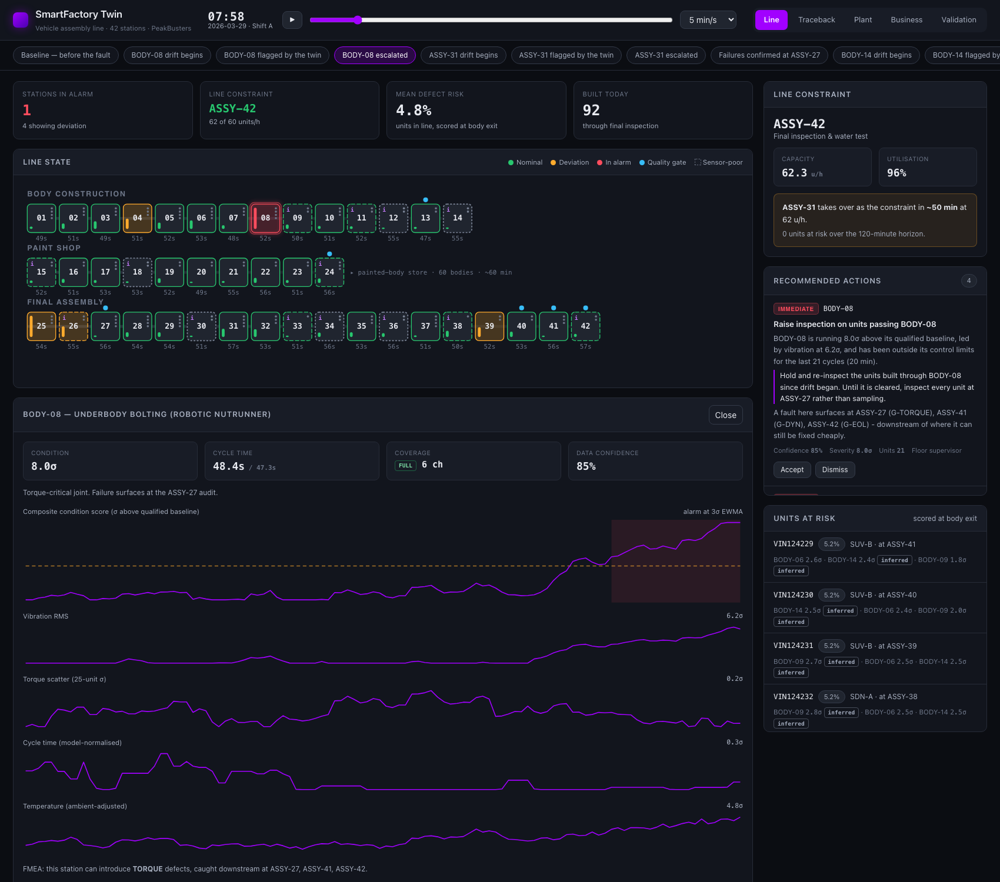
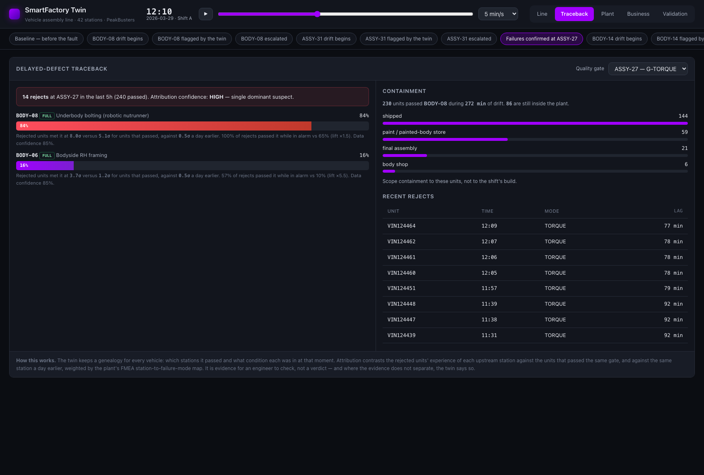
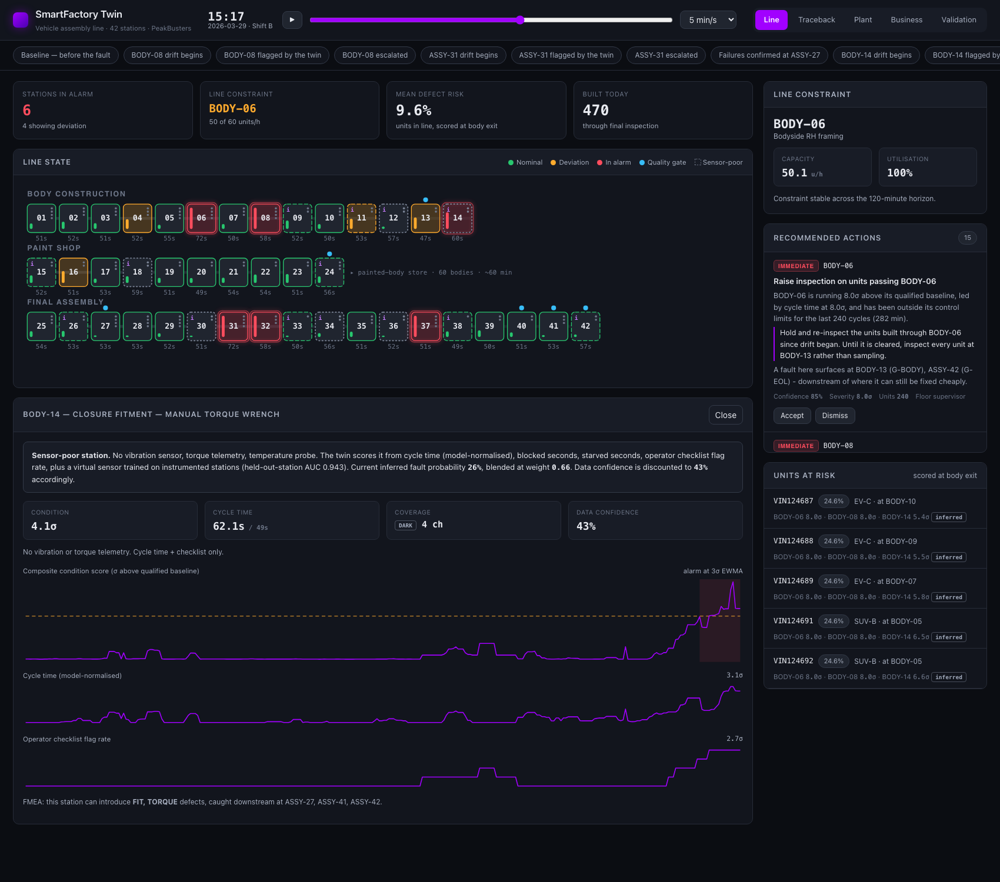
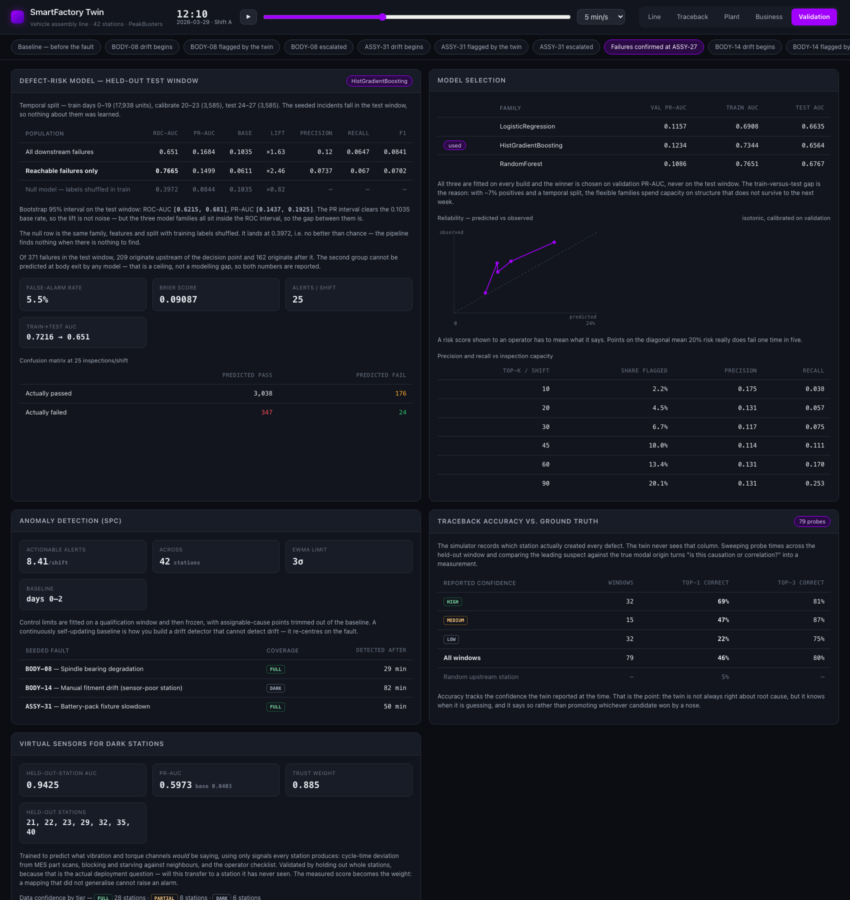

Don't wait for the defect.
A flow-level digital twin for a vehicle assembly line. It detects a station going bad while it is still going bad, traces a late-discovered defect back to the station that most likely caused it, and scopes containment to the vehicles actually affected — on a brownfield line where a seventh of the stations have no process sensors at all.
A vehicle assembly line fails in two ways, and reports both only after the loss is already booked.
Bottlenecks are confirmed, not foreseen. MES dashboards show the jam once throughput has already been lost. The only lever left is overtime, not rebalancing.
Defects escape in batches. A fault introduced at an early station surfaces at a downstream gate an hour or more later, turning one error into a rework campaign, a containment exercise and warranty exposure.
By then the useful question has already changed. It is no longer "what is wrong?" but "how many, and where are they now?"
| Approach | What it misses |
|---|---|
| PLC limit checks | Watch the mean, not the variance. A worn spindle whose scatter has doubled can sit inside every acceptance window. |
| MES throughput dashboards | Report the constraint after WIP has piled up. A quality fault that does not slow the line is invisible. |
| End-of-line inspection | Correct but late. It finds the batch, not the cause, and not before the batch exists. |
| Full-IoT digital twins | Assume complete instrumentation. On a brownfield line a meaningful minority of stations have none, and those are usually the manual ones where errors originate. |
The gap is not sensing. It is that nobody is modelling each station against its own qualified normal, keeping a record of which vehicle met which station in which condition, and using that record when a gate finally rejects something.
A twin of flow and quality — deliberately not of geometry. It carries three things a dashboard does not:
| Capability | What it enables |
|---|---|
| Per-station condition model each station charted against its own frozen, qualified baseline | Detects a station leaving its envelope while production is still running, not after a gate rejects. |
| Unit genealogy for every vehicle: which stations it passed and what condition each was in at that moment | Turns a late rejection into a ranked list of upstream suspects and an exact affected-unit list. |
| Flow model rolled forward station capacities projected two hours ahead | Names the station that becomes the constraint, with time to rebalance rather than pay overtime. |
MES part scans · PLC handshake · process telemetry · quality gates · operator checklists
|
v
DIGITAL TWIN STATE per-station condition · unit genealogy · flow model
|
+--> ANOMALY DETECTION frozen-baseline SPC + virtual sensors (dark stations)
+--> DEFECT-RISK MODEL calibrated, capacity-aware, scored at body exit
+--> RANKED TRACEBACK genealogy contrast + FMEA prior, with confidence
+--> FLOW FORECAST two-hour capacity roll-forward
|
v
RISK & ACTION ENGINE four action classes, confidence-gated, human-in-the-loop
|
v
ROLE-BASED VIEWS supervisor · plant manager · leadershipRead-only, and advisory-only. The twin writes nothing back to the control system. Every recommendation is an action a human already has the authority to take, which keeps it outside the safety envelope and outside the change-control burden that would otherwise dominate deployment.
Deployment footprint: one process and a browser. No microservices, no Kubernetes, no cloud dependency.
Three mechanisms, in descending order of how much weight we put on them.
Each station is charted against control limits fitted on a qualification window and then frozen, with assignable-cause points trimmed out of the baseline. This matters more than it sounds: a continuously self-updating baseline is how you build a drift detector that cannot detect drift, because it quietly re-centres on the fault until it reads as normal.
Signals are separated into a condition score (is this station degrading?) and a flow score (is it constraining the line?), because the evidence for each is different and mixing them produced ten times the false alarms at no gain in detection.
At body exit, each vehicle is scored for the probability it will be flagged at a downstream quality gate, using only what happened upstream of that point. The score is calibrated — a 20% risk really does fail about one time in five — because an uncalibrated number shown to an operator is one they learn to discount.
Station capacities are extrapolated forward two hours to name the station that becomes the constraint, and when.
| Time | What happens | What the twin does |
|---|---|---|
| 07:12 | Spindle bearing begins to wear. Mean torque still inside the PLC window. | Nothing yet — correctly. |
| 07:43 | Vibration and torque scatter climbing together. | Raises MONITOR. Evidence real, not yet worth stopping work. |
| 07:58 | Deviation sustained for 21 cycles. | Escalates to IMMEDIATE at 8.0σ, led by vibration at 6.2σ. Nothing was added but fifteen more minutes of evidence. |
| ~09:30 | First bodies rejected at ASSY-27. | Already contained. This is when a conventional line would first react. |

07:58 — BODY-08 escalated to IMMEDIATE. The station detail shows vibration at 6.2σ against a frozen baseline, with the alarm band and the FMEA link to ASSY-27, ASSY-41 and ASSY-42.
The recommendation is not a risk percentage. It names the station, the evidence, the action, and where the fault will surface if ignored — and it carries an accept/dismiss decision that is logged, which is what turns the false-alarm rate from a claim into a measurement.
When a gate does reject a body, the twin contrasts what each rejected unit experienced upstream against the units that passed the same gate, and against the same station a day earlier — weighted by the plant's FMEA station-to-failure-mode map.

12:10 — 14 rejects at the ASSY-27 torque audit. BODY-08 carries 84% of the evidence at HIGH confidence; containment is scoped to the 230 units that passed during 272 minutes of drift, 86 of them still in the plant.
| Confidence the twin reported | Windows | Top-1 correct | Top-3 correct |
|---|---|---|---|
| HIGH | 32 | 69% | 81% |
| MEDIUM | 15 | 47% | 87% |
| LOW | 32 | 22% | 75% |
| All windows | 79 | 46% | 80% |
| Random upstream station | — | 5% | — |
The number that matters is not 46%. It is that accuracy tracks the confidence the twin reported. An attribution engine that always names a station will eventually send a crew to a healthy one, and that is how a plant learns to stop believing it.
Round 1 argued that a twin assuming full IoT coverage cannot deploy where the problem actually lives. This prototype puts 6 of 42 stations on cycle time and an operator checklist alone, plus 8 more with partial coverage.
| Coverage | Stations | What the twin can read |
|---|---|---|
| FULL | 28 (67%) | cycle time, blocking/starving, vibration, torque, temperature |
| PARTIAL | 8 (19%) | cycle time, blocking/starving, temperature |
| DARK | 6 (14%) | cycle time, blocking/starving, operator checklist |
Cycle time and blocking/starving exist on 1990s equipment — they come from MES part-scan timestamps and the line-control PLC handshake. That is the entire reason a dark station can be scored at all, and why the deployment needs no new hardware.
On instrumented stations we can see both the rich evidence (vibration, torque scatter) and the thin evidence every station produces. So we learn the mapping from thin to rich on the stations that have both, and apply it to the stations that only have the thin half.
Validation holds out whole stations, not rows, because that is the actual deployment question: will this transfer to a station it has never seen. The validated score then becomes the blending weight — a mapping that did not generalise cannot raise an alarm.
BODY-14 is a manual closure-fitment station with no vibration or torque telemetry. It drifts on the same day. The twin detects it — but 82 minutes in rather than 28, and at 43% data confidence.

BODY-14 — detected from cycle-time creep, the operator checklist and virtual sensing. The panel states what is missing, what was inferred, and the resulting confidence discount.
Strong evidence → act. Weak evidence → don't overreact.
That asymmetry is the difference between a tool a supervisor keeps using and one they learn to ignore. It is enforced in code, not left to judgement: the recommendation class is gated on measured data confidence.
Every recommendation carries an accept/dismiss decision that is logged. Over a pilot that ledger — not our claims — is what establishes the real false-alarm rate on that plant's own line.
The twin is a read-only consumer of data that already exists. No PLC logic change, no new tag on the control network, no modification to any interlock.
| Source | Fields | Already exists because |
|---|---|---|
| MES part-scan log | unit, station, arrive/depart timestamps | traceability and takt reporting are mandatory |
| PLC handshake / historian | blocked and starved seconds | the line controller computes these to sequence conveyors |
| Process telemetry where fitted | torque, vibration, temperature | already historised on modern cells |
| Quality system | gate results and defect modes | rework and warranty already depend on it |
| Operator checklist | manual check results | already recorded on paper or tablet |
| ERP / goods inward | lot id, incoming quality index | supplier quality management already tracks it |
Transport is an OPC-UA subscription or a historian tap onto a message bus. Where a legacy cell has no OPC-UA server at all, the MES scan record alone is enough to place that station on the line view with cycle-time and flow scoring — degraded, and labelled as degraded.
Nothing is written back. If a plant later wants closed-loop action, the natural first step is a supervisory setpoint such as inspection sampling rate at a gate — not a control action.
Everything below is measured on a held-out temporal split — train days 0–19, calibrate 20–23, test 24–27 — and is reproduced by a single command. All three demo incidents fall in the test window, so nothing about them was learned.
| Measure | Result |
|---|---|
| Actionable alerts | 8.41 per shift across all 42 stations |
| BODY-08 (instrumented) detected | 28 min after onset |
| ASSY-31 (instrumented) detected | 50 min after onset |
| BODY-14 (sensor-poor) detected | 82 min after onset |
| Healthy stations | 99th percentile condition score 2.8σ |
| Population | ROC-AUC | PR-AUC | Base rate | Lift |
|---|---|---|---|---|
| All downstream failures | 0.651 | 0.168 | 0.103 | ×1.63 |
| Reachable failures only | 0.766 | 0.150 | 0.061 | ×2.46 |
| Null model — training labels shuffled | 0.397 | 0.084 | 0.103 | ×0.82 |
False-alarm rate 5.5%, Brier score 0.091, 25 flagged units per shift against a stated inspection capacity of 25.
36% of constraint-handover calls verified, median 95 minutes of warning. Eleven calls is a small sample and is reported as such.

The Validation view ships inside the product. Metrics, model selection, calibration curve, capacity curve and traceback accuracy are visible to the customer, not just to us.
| Component | Transfers to a new line or plant? |
|---|---|
| Station-level SPC | Yes. Limits are per-station and fitted locally; nothing is shared between lines. |
| Virtual sensors | Partly. Validated by holding out whole stations precisely because that is the transfer question. A new plant re-fits on its own instrumented population. |
| Defect-risk model | No, not directly. Station-to-failure-mode coupling is plant-specific. Feature definitions and the pipeline transfer; the weights do not. |
| Economics | No. Cost constants are the plant's own. |
This is why the incremental cost per line is an integration and re-fitting cost rather than a licence line — it is what the second and subsequent lines actually consume. A plant with different equipment ages does not need a different product; it needs its own qualification window and its own cost book.
| Line | Volume | Unit value | Annual |
|---|---|---|---|
| Defects caught at body exit instead of at a gate | 1,440/yr | × $560 | $806,400 |
| Escapes intercepted (defects no gate would catch) | 720/yr | × $5,220 | $3,758,400 |
| Probability a targeted re-inspection finds the fault | × 0.7 | $3,195,360 | |
| Cost of the extra inspections this creates | 12,000/yr | × $26 | −$312,000 |
| Realisation haircut on everything modelled | × 0.5 | $1,441,680 |
4 verified constraint calls over 7.4 days → 129/yr, × 14.4 units at risk × 0.35 conversion × 0.5 realisation × $1,150 contribution margin = $373,935.
Valued at contribution margin on recovered production, not at a stopped-line downtime rate. A constraint handover slows the line; it does not stop it. Using the $22k/hour downtime figure here would have produced a $2.9M throughput benefit and a two-week payback — a number that ends a conversation with a plant manager rather than starting one.
| Label | Meaning |
|---|---|
| MEASURED | Counted in the prototype's own held-out test window — true positives, alerts, verified forecasts, attribution hits. |
| MODELLED | A measured quantity multiplied by a stated cost assumption. |
| ASSUMED | A cost constant carrying no evidence from this prototype. A plant substitutes its own cost book. |
Designed so that failure is visible early and cheap.
| Phase | What happens | Exit criterion |
|---|---|---|
| 1 — Shadow weeks 1–8 |
Twin runs on live data and shows nobody anything. Every alert, score and attribution is logged. Control limits qualified on this plant's own data. | PR-AUC lift ≥ 1.5 with a bootstrap interval clearing 1.0, and ≤ 15 actionable alerts per shift. If not met, stop. |
| 2 — Advisory weeks 9–20 |
Body shop only. Supervisors see alerts and accept or dismiss each one. Attribution claims are checked against what maintenance actually finds. | ≥ 50% of high-confidence attributions confirmed by maintenance; acceptance rate neither near 0% nor near 100%. |
| 3 — Full line weeks 21–40 |
All zones. Compared against the same line's prior-year first-time-through quality, escape rate and constraint-related loss. | Business case restated with the plant's own measured effect size, replacing every MODELLED figure. |
| 4 — Scale from month 10 |
Second line, then second plant. Re-qualification and re-fitting per line; the product does not change. | Per-line integration cost tracking to plan. |
Stated in advance, because a pilot that cannot fail is not a test:
| Status | Scope |
|---|---|
| IMPLEMENTED | SPC and drift detection · virtual sensors · feature pipeline · model training, calibration and selection · bottleneck forecast · traceback, containment and its accuracy validation · recommendation engine · economics · the full dashboard |
| SIMULATED | The plant itself. Telemetry, defect creation and gate detection come from a generator with a latent causal model the twin never sees. Everything downstream would run unchanged on a real MES feed. |
| PROPOSED | MES / PLC / OPC-UA connectors · multi-plant rollout · model registry and retraining schedule · authentication and audit trail for the decision ledger |
Every figure in this document is reproducible.
Clone https://github.com/avinas29/smartfactory-twin, run python run.py, and the same
numbers come back — the documents read them from the pipeline's own output rather
than being written by hand.